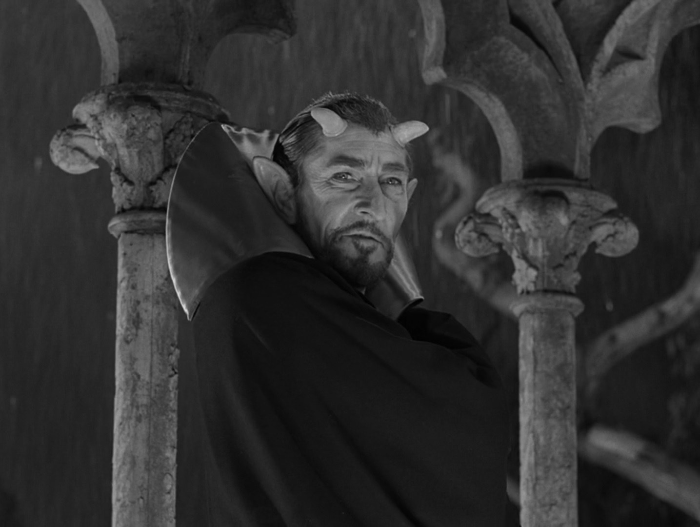

Creatures: Season 1
June 26, 2018 by  Douglas Hawkes
Douglas Hawkes
In this post we will be discussing the creatures/other worldy beings that are in the first season of the original series of the Twilight Zone. There are all types of beings throughout this season that sometimes play a key role or they're there to just scare the crap out of you and we are going to go over them.
- Death
- Henry J. Fate
- The Devil
- Pedott the Peddler
- Arch Hammer
- The Hitch-hiker
- The Monsters
- Walter Jameson
- Other Wordly Aliens
- Pip
- The Mannequins
Starting things off with good ol' Mr. Death from episode 2, "One for the Angels". We all know of Death and what his only job is, to take people to the afterlife. In this episode Death starts off by studying his victim outside of some building steps and writing details about him in a small notepad. The man returns home from a normal day to Death appearing in his room only to inform him that he is going to die by midnight tonight and has been lucky enough for the death to be of natural causes which is the meat and potatoes of this plot.
Death acts as a tight shirt, very blunt and shrewd individual in this one. He wears tight suit and his hair slicked back and you can tell that he is about his business. You can tell that he has no empathy when a little girl gets hit by a car for him take home as well and he shows absolutely no emotion but in the end Death is outwitted and you see him lose his composure. This is a truly heartwarming episode and I highly recommend it.
Now Henry J. Fate may not be an other wordly being or a creature but I still think he is worth mentioning because he does posess some kind of magical supplement that can inexplicably recharge a person or somehow grant them some kind of power. Fate is from episode 3, "Mr. Denton On Doomsday".
but I still think he is worth mentioning because he does posess some kind of magical supplement that can inexplicably recharge a person or somehow grant them some kind of power. Fate is from episode 3, "Mr. Denton On Doomsday".
The town drunk in what seems to be the old west is basically stripped of his dignity after guilt takes him over from his gun duels and then along comes the mysterious Mr. Fate who seems more than willing to bestow upon this man some crazy accuracy which he then uses to jump back up in the ranks of gunslinging in the town and attract other hungry gunslingers.
Mr. Fate is an older smaller little peddler driving around a mysterious horse and carriage that reads, "Dealer in Everything". He seems like real helpful guy the way he comes when the town drunk is in need. What I got from him while watching this episode is that he was basically fate stepping into the situation right on time to help save 2 mens lives. When he is speaking to the town drunk tells him before leaving, "This is just a service of Henry Fate. Just so you might remember some time the night fate stepped in", this was key. Another good warm episode that you will love.
This is the first depiction of the devil we see in the series in episode 6, "Escape Clause". The devil in this episode comes to be when a very rude and obnoxious man to say the least, who is also a hypocondriac brings forth the devil making a bargain to sell his soul for immortality. I like this episode alot, not only does this guy get what he deserves but it's very funny throughout the episode.
This devil is depicted as a very round man with a suit on with bulging eyes calling himself "Cad Wallader". At one pint he states that the name just rolls off the tongue and I have to admit it certainly does if you try it. He was a very deceiving devil labeling the mans soul as infintesimal and microscopic while speaking so eloquently when talking the man down into a contract. When devil reveals to him who he really is, the man is petrified! He is literally petrified for a couple seconds lol. I enjoyed this one very much and have seen it alot as well, the devil was played very well and it essentially shows a man beaten by the devil, a must watch.
Pedott is an old peddler who has an amazing ability to give people exactly what they need by seeing ahead of time and just happens to travel through various diners helping people giving them exactly what they need according to their situation in episode 12, "What You Need". The peddler is in a diner doing what he does best, over hearing certain conversations and stepping in to help as he pleases but doesn't know he isn't the only one ear hustling on convos. A strange man awaits in the corner of the bar waiting to approach the old man outside as the old man walks out. From here the strange man is being incredibly hostile and aggressive demanding the old man to give him what he needs and this is where the story goes.
Pedott is a good hearted nice old man who uses his gift only for good and nothing else but unfortunately his life is threatened many times by the greedy man who cannot be pleased. This episode is one of my favorites because the twist in the end is fantastic and it's like everything unfolded as it should've. This is also not an other worldy being nor is it some creature but again is worth mentioning because he does possess a power that can't be explained.
Arch Hammer definitely fits into the category of other worldy being/creature because I honestly have no idea as to what he is. You can find him in episode 13, "The Four of Us Are Dying". Arch Hammer is a 4 man scammer in one and when I say that I mean he can change his face to look like anyone he chooses. You can only imagine where the story goes from there.
This man is originally Arch Hammer, who then turns into a trumpeter Johnny Foster who wants to runaway with a beautiful women, then he turns into a dead gangster Virgil Sterig who tries to scam some money, then he turns into a boxer Andy Marshak. All he has to do is concentrate on any image of a person and he can change his face to theirs. Lets just say he tried to scam with the wrong face in the end. This was a really good episode and I thought the concept and how it ended was genious but I expected nothing less from Rod Serling.
Next is the ever lurking hitch-hiker who makes his appearance in episode 16, "The Hitch-Hiker", and goes right into the category of other worldy being. This hitch-hiker seems to stalk a lady on the highway as she is traveling cross country and he happens to appear every step along the way which is really disturbing. This really sums up this episode, there isn't much else to it but a couple other characters who aren't really relevant but add to the effect of the gloomy hitch-hiker.
This hitch-hiker probably has the easiest part in the whole episode. He stands there and waits for the car to pass while he raises his thumb. He is a short scruffy looking man that wheres a smurky yet menacing expression. He barely says a few words in the episode too but they pack a hard punch when you finally wrap your head around the twist in the end and I won't spoil it because you should really watch it. This also is a good episode, just with the hitch-hiker being at every stop having the same expression on his face is just something that can make you question wether this is reality or not. I think his character represents a similar "death" type of character who doesn't need to say much and waits patiently for dead to come to terms.
The next creature/other wordly being comes from the infamous episode 22, "The Monsters Are Due On Maple Street", which has inspired other remakes like those Halloween episodes from The Simpsons. If you haven't seen this episode then your really missing out, as there are numerous references to this episode and others as well. Monsters have caused a small peaceful neighborhood's power to go out and leave one house with power causing total chaos and essentially implosion.
There is alot more behind this episode than I have explained so I encourage you to please watch it. The monsters are seen in the end of the episode standing on top of a hill in front of their spaceship, the hill allowing them to oversee the whole neighborhood. There are two of them dressed in spacesuits, one handling some kind of radar equipment and the other with a piece of technology in his ear staring off into the town. They appear to use their technology to control the towns power causing the town to pick one another off destroying itself. They claim to do it from one town to the next eventually letting all humans destroy themselves. I feel like this one was saying that aliens don't really have to come down to destroy us because we have certain negative traits that can destroy ourselves. I liked this episode ALOT. The acting was excellent and the episode kept me on edge because I always thought the monster was the little kid because he seemed to have some insight on what was going on.
Now in episode 24, Walter Jameson doesn't start off as an other wordly being but has an alchemist perform some kind of work on him which stops him from aging which I think deserves to be labeled as an other wordly being after that. He is a history professor dating an old mans daughter meanwhile he himself is over thousands of years old. The old man is skeptical of his true age and thinks he saw him in an old histroy book so he invites Jameson to him and his daughter's house for supper and there is where they uncover the story.
Walter Jameson is an ageless man who feels he learned a terrible lesson by living so long and having many different wives. Not only does he feel he is learning a lesson but also longs for death so much that he keeps a revovler in his drawer but doesn't have enough courage to pull the trigger. He even points to a statue of plato and says he was old enough to know this man to really give you a feel for how old he really is. This episode was done very well and the twist was excellent and the closing narration from Rod Serling is the icing on the cake referring to man coming from dust and that he will end in dust.
In episode 25, "People Are Alike All Over", there are indeed actual aliens this time and they are deceitful creatures that look like you and me. So the aliens in this one are found after two astronauts crash land on the planet Mars. One of the astronauts gets injured pretty badly and dies. The other now is extremely scared of what is outside of the door and begins to hear noises outside of the ship. After much hesitation he finally opens the door and is astonished seeing martians that appear to look just like humans.
These martians look just like humans but do not speak english. Instead they say they use what they call unconscious transference which they say is kind of like hypnosis so I'm thinkning it's more like some kind of mind reading and they are able to turn the english words into what they understand. They all wear robes of some sort with sashes and sandals which kind of reminds me of something like ancient greece. At the start they seem very nice and accepting letting the man know that no one will hurt him. Soon he finds out that these martians are very similar to humans in the way that they treat him like a caged animal literally. I like this episode very much and the message behind it, when you see that sign at the end it just blows your mind.
I would absolutely consider Pip as an other wordly being because of what he is and who he serves in episode 28, "A nice Place to Visit". We meet Pip after a burglar gets shot by the police after fleeing the scene of a robbery. The burglar wakes up from being shot to an old rotund man standing over him in an all white suit named Pip. Pip explains to the burglar that he is his guide essentially and his job is to see to it that the burglar gets whatever he wants. A little later the burglar then realizes that he is in fact dead and believes that Pip is his guardian angel and that he is in heaven.
Pip is always wearing an all white suit and has all white hair as well. He is a very polite being with manners and impeccable customer service you could say. Pips greatest part is when he reveals to the burglar that he is NOT in heaven and doesn't know what gave him that idea because it's actually hell. I must admit I was waiting for this moment the whole episode and the buildup was starting to be uncontrollable. After Pip fills him in on where he is, he goes straight into a devlish laugh that ends the episode which is ironic because of how polite he was at the beginning. Another highlight episode in my books with great irony and twist that is satisfying.
Last but not least is a wonderful spooky episode that left my thoughts and imagination wondering wildly. In episode 34, "The After Hours", we have a young lady named Marsha going to the 9th floor of a department store to buy a gold thimble for her grandmother. She steps out and no one and nothing is there, she rings a buzzer and is approached by a saleslady selling her the only item on the floor, a gold thimble. She makes the purchase and head back downstairs after her odd encounter and realizes that the thimble is scratched so she goes to complain. While speaking with the managers she thinks she sees the saleslady that sold her the thimble until someone picks the saleslady up and turns her around revealing that she is a mannequin that looks exactly like the saleslady shocking the life out of Marsha.
I would say these mannequins fit in the category of creature because they come to life after the department store closes and they are some odd looking mannequins that'll leave you never looking at another one the same way. It seems as though they have a system where 1 mannequin goes to live a normal life amongst humans for 1 month out of the year. It's pretty clear that marsha has been living the life of a human too long. I love this episode because it has suspense, mystery, fantasy, and even the one the managers brings comedy. At the end they really focus the shot in on the head of the mannequin and then Rod Serling has a closing narration that will leave you in awe.
Thank you so much for visiting the 'Twilight Talk' blog and if you really liked this post then please show love and support and subscribe and also let me know what you all thought of this post down in the comments and if I should do a Creatures part 2. Thanks again guys, more interesting Twilight Zone posts coming very soon.